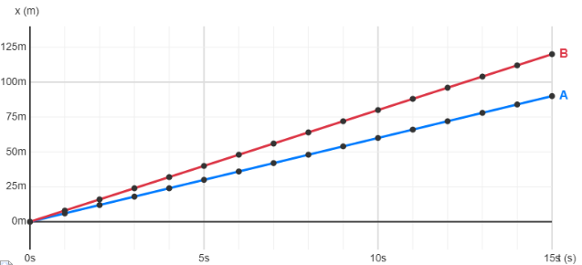
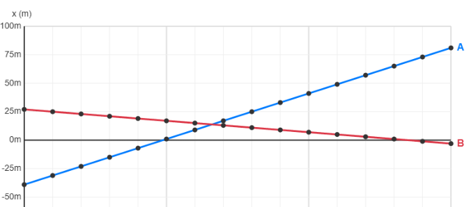
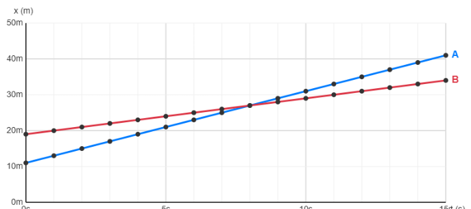
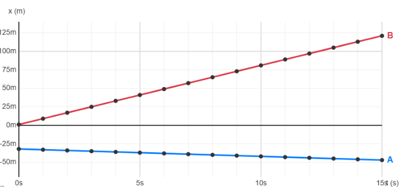

Imagina los dos coches de la imagen arrancando juntos desde el punto cero y avanzando en línea recta. Ambos trazan rectas ascendentes porque sus velocidades son constantes y positivas; cuanto más empinada sea la línea, más rápido va el coche.
Fíjate que en 15 s el vehículo B (línea roja) ha subido hasta 125 m, mientras que el A (azul) sólo llega a 90 m. B recorre más metros porque su pendiente es mayor, es decir, tiene más velocidad. Con el paso del tiempo las dos líneas se separan y esto nos indica que se están alejando los vehículos.

En función de las gráficas podemos encontrar tres situaciones diferentes.
Cruce
- Diremos que se está produciendo un cruce entre dos vehículos cuando las dos líneas se cortan y tienen pendientes con distinto signo (van moviéndose en sentidos opuestos). El punto de corte de las dos rectas nos dice el instante y la posición en la que ocurre el cruce.

Persecución
- Diremos que se está produciendo una persecución entre dos vehículos cuando las dos líneas se cortan, tienen pendientes con el mismo signo (van moviéndose en el mismo sentido) y el vehículo que persigue tiene pendiente mayor (más velocidad). El punto de corte de las dos rectas nos dice el instante y la posición en la que ocurre el cruce.

Se alejan
- Diremos que dos vehículos se alejan cuando las rectas nunca se cruzan.
